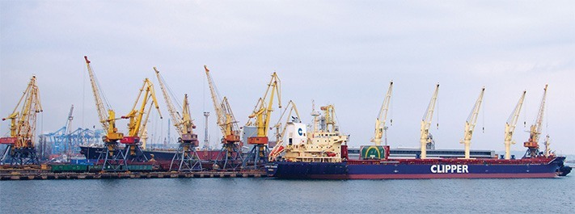

О компании
ООО «Электрик-Инжиниринг»- одна из крупнейших компаний Черноморского бассейна по снабжению и сервису судов, предоставляющая свои услуги во всех портах Украины с 1995 г. Головной офис компании, складские и производственные помещения расположены в городе Ильичевск, который является одним из крупнейших портов Украины.
Компания является членом ISSA и учредителем Украинской Национальной Ассоциации Судовых Поставщиков. Система качества предоставления услуг компании сертифицирована и соответствует международному стандарту качества ISO 9001:2008.
Квалифицированные специалисты компании готовы в любое время предоставить следующие услуги, как на борту судна, так и на сервисной станции компании:
- Ремонт судовых двигателей, дизель-генераторов, насосов, компрессоров, сепараторов, судовых палубных механизмов
- Поставка судовых механизмов и оборудования, запасных частей;
- Дефектация и ремонт изделий из чугуна по технологии METALOCK;
- Поставка и обслуживание аварийно-спасательного, противопожарного и радионавигационного оборудования;
- Общесудовое снабжение;
- Яхтенное снабжение и сервис;
- Изготовление, проверка и испытание спускоподъемных устройств для шлюпок и плотов.
Компания одобрена ведущими Классификационными обществами: “Регистр Судоходства Украины”, “Российский Морской Регистр Судоходства”, "Российский Речной Регистр", “Bureau Veritas”, “Lloyd’s Register”, “Det Norske Veritas”, “Germanischer Lloyd”, “American Bureau of Shipping”, “ClassNK” и "Rina".
В распоряжении компании сервисная станция по обслуживанию надувных спасательных средств (соответствует требованиям Резолюции ИМО A.761 (18)), участок по сервисному обслуживанию огнетушителей и противопожарных средств и систем, сервисная станция по обслуживанию радионавигационного оборудования и участок производства спускоподъемных устройств для шлюпок и плотов.
ООО «Электрик-Инжиниринг» является официальным представителем на Украине таких торговых марок, как:
• NORTHROP GRUMMAN SPERRY MARINE • ACR ELECTRONICS • FURUNO • KVH • THRANE & THRANE • SAMYUNG • HEADWAY • JOTRON • KANNAD • MCMURDO • MARTEK • JRC • YOKOGAWA • FLIR • DANELEC • UNI-SAFE • ENTEL • BEAM • YANMAR • MTU • ROLLS ROYS • KOHLER • METALOCK • PBS TURBO • TOP MARINE • UNITOR • LALIZAS • FUJIKURA • DSB • RFD / BEAUFORT / TOYO • ZODIAC • EUROVINIL • CSM • SEAMAN SAFETY • YOULONG • EUROSAFE • SPORTECH • TACCONI • ATLANTIC AIR • OPTEC • BALDEN • YILMAZ TORNA • ZHENJIANG JUST • INTERNATIONAL PAINTS.